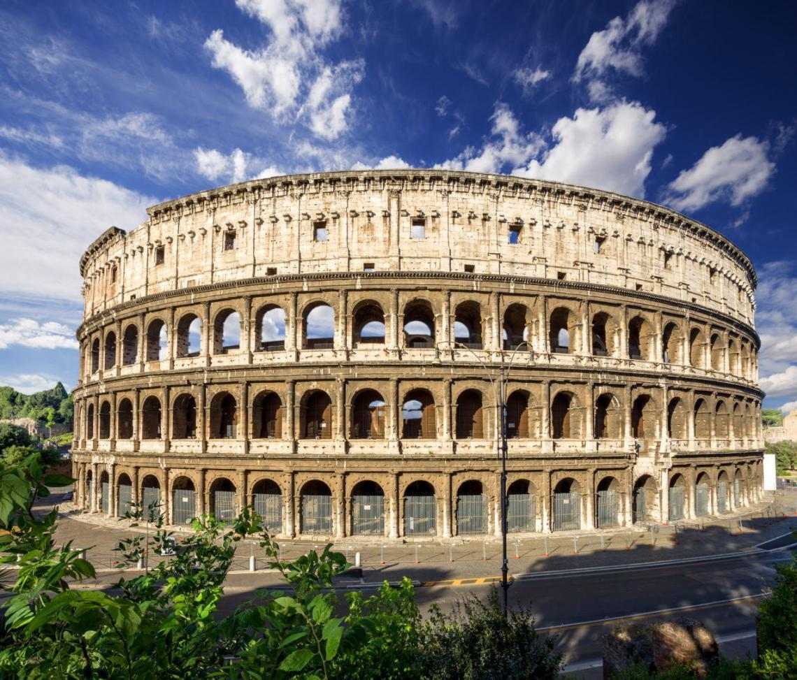

Rome

Rome is the capital of Italy and one of the most famous historical and cultural cities in the world. Known as the "Eternal City", Rome combines ancient civilization with modern life and is a city full of legends and romance. Whether you are visiting Italy for the first time or you love history, art, food or shopping, Rome can bring you an unforgettable travel experience.
Traffic and travel suggestions
Rome is a city of concentrated attractions, and most areas can be covered on foot, but public transportation is also very useful:
- Metro: Line A and Line B connect major attractions.
- Buses and Trams: Wide road network but slightly slower in traffic jams
- Walking: It’s the best way to feel the atmosphere of the city.
Tips: Be sure to punch your ticket on the yellow machine before taking the bus; it is recommended to download Moovit or Google Maps to help with navigation.
Famous attractions recommendations
Colosseum
The symbol of the ancient Roman Empire. It is recommended to book tickets online in advance to avoid the long queues.
Roman Forum
As the center of ancient Roman political and religious activities, the ground is uneven, so it is recommended to wear comfortable shoes.
Authentic food recommendations
Carbonara
The original version does not contain cream and has a rich taste.

Pizza al Taglio
Commonly found in street shops, priced by weight.

Travel Preparation Advice
Budgeting
Rome can be enjoyed on a range of budgets. For affordable travel, consider using public transportation, dining at local trattorias, and booking attractions in advance to secure discounts. Setting a daily spending limit and using budgeting apps can help you keep your expenses in check.
Packing
Pack light and comfortable clothing suitable for extensive walking, and include layers for changing weather conditions. Essential items include a pair of comfortable walking shoes, a travel adapter, a reusable water bottle, sunscreen, and a basic first aid kit. If you plan to visit religious sites, bring attire that covers shoulders and knees.
Safety
While Rome is generally safe for tourists, always stay vigilant—pickpocketing can occur in crowded areas. Carry photocopies of your important documents, avoid displaying excessive cash, and consider using a money belt. Also, download a translation app or learn a few basic Italian phrases to handle any emergency or miscommunication.
Local Customs
Embrace Rome's vibrant local culture by greeting locals with a friendly "Buongiorno" or "Buonasera." Tipping is appreciated in restaurants and cafes, though not compulsory—a 10% tip is usually sufficient. Be aware of the local pace of life and show respect when visiting historical religious sites by dressing appropriately.